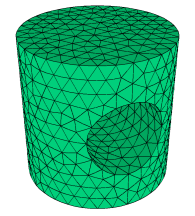

|
3d_toggle |

  
|
|
3d_toggle |
|
{ 3D_TOGGLE.PDE
This problem shows the use of curved extrusion surfaces and VOID layers
to construct a transverse cylindrical hole in an upright cylinder.
The domain consists of three layers: 1) the cylinder below the hole 2) the hole 3) the cylinder above the hole. Layer 2 has zero thickness outside the hole region, and is VOID (excluded from the mesh) inside the hole.
Click "Controls->Domain Review" to watch the domain construction process.
}
title '3D CYLINDRICAL VOID LAYER TEST'
coordinates cartesian3
select errlim = 0.005
variables u
definitions k = 0.1 h = 1 L = 1 |
 |
Ro = 1 { the cylinder radius }
Ri = Ro/2 { the hole radius }
{ the base-plane Y-coordinate of the intersection of the hole projection with the
cylinder projection: }
Yc = sqrt(Ro^2-Ri^2)
Z4 = L { Z-height of the cylinder top }
{ the Z-shape function for the hole top (zero beyond +-Ri): }
Z3 = CYLINDER ((0,1,0), (0,-1,0), Ri)
{ the Z-shape function for the hole bottom (zero beyond +-Ri): }
Z2 = -Z3
Z1 = -L { Z-height of the cylinder bottom }
equations
U: div(K*grad(u)) + h = 0 { a heat equation for demonstration purposes }
extrusion z=Z1,Z2,Z3,Z4 { short-form specification of the extrusion surfaces }
boundaries
Region 1 { this region is the projection of the outer cylinder shape }
start(Ro,0)
value(u)=0 { Force U=0 on perimeter }
arc(center=0,0) angle=360 to close
limited region 2 { this region is the projection of the transverse hole }
layer 2 void { the region exists only in layer 2. Its bounding surfaces
merge beyond the edges of the hole }
start(Ri,Yc) arc(center=0,0) to (-Ri,Yc)
line to (-Ri,-Yc)
arc(center=0,0) to (Ri,-Yc)
line to close
monitors
grid(x,y,z)
elevation(u) from (-Ro,0,0) to (Ro,0,0)
contour(u) on z=0
contour(u) on y=0
plots
grid(x,y,z)
elevation(u) from (-Ro,0,0) to (Ro,0,0)
contour(u) on z=0
contour(u) on y=0
end